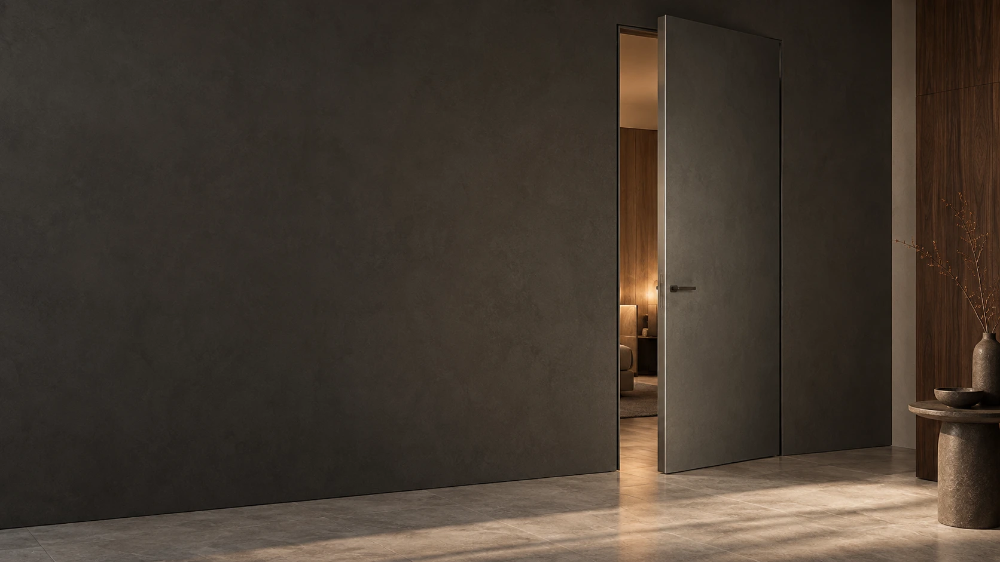

ЗЕРКАЛО
Продолжение зеркальной плоскости
Зеркало можно рассматривать как материал одной или обеих сторон полотна после проверки веса, жёсткости и способа крепления.
Совместимый материал толщиной 4 мм может стать одной или обеими сторонами полотна. Такая конфигурация позволяет связать скрытую дверь с зеркальной, стеклянной или панельной отделкой интерьера.

В текущей линейке Hidden Doors такие материалы рассматриваются именно в системе 59 мм на алюминиевом каркасе.
| Система | 59 мм |
|---|---|
| Каркас | Алюминиевый |
| Высота полотна | 1700–2950 мм |
| Ширина полотна | 450–1000 мм |
| Материал | Совместимый листовой материал 4 мм |
| Открывание | Classic / Reverse, левое / правое |
| 42 мм | Стекло и зеркало не предусмотрены |
Конкретный материал проверяется до изготовления — одной толщины 4 мм недостаточно.
Зеркало можно рассматривать как материал одной или обеих сторон полотна после проверки веса, жёсткости и способа крепления.
Тип и исполнение стекла согласуются технически под конкретную дверь. Нельзя считать любой лист 4 мм автоматически совместимым.
Если задача не требует зеркала или стекла, система 59 мм позволяет рассматривать и другие совместимые листовые материалы.
Все варианты отделки ↗В системе 59 мм материал стороны 1 и стороны 2 задаётся независимо.
Проект может сочетать разные покрытия или материалы на двух сторонах полотна. Конкретная комбинация подтверждается технически до производства.
Сторона 1 — лицевая со стороны коридора; остальные параметры конфигурации фиксируются в спецификации заказа.Перед изготовлением проверяются свойства самого материала и способ его установки на полотно.
Не устанавливаем материал только потому, что он имеет нужную толщину.
Характеристики конкретного стекла, зеркала или панели должны соответствовать выбранной конфигурации.
Материал и его крепление рассматриваются как часть конструкции двери, а не как отделка «после изготовления».
Одновременно фиксируются торец, тип открывания и сторона двери.
Цвет алюминиевого торца подбирается отдельно от материала сторон.
Левое или правое исполнение фиксируется под планировку.
Для системы 59 мм доступно обратное открывание, которое нужно выбрать до подготовки проёма.
Скрытые двери Reverse ↗Эти данные позволяют понять, подходит ли выбранный материал и собрать реальную комплектацию.
| Размер | Высота и ширина полотна |
|---|---|
| Сторона 1 | Зеркало, стекло или другой материал |
| Сторона 2 | Материал второй стороны |
| Материал | Толщина и характеристики конкретного листа |
| Открывание | Classic / Reverse, левое / правое |
| Торец | Цвет алюминиевого торца |
Да, в системе 59 мм после технической проверки конкретного зеркала и способа крепления.
Да, в системе 59 мм при совместимости конкретного стекла с конструкцией полотна.
Нет. Для системы 42 мм стекло и зеркало не предусмотрены.
Да. В системе 59 мм материалы сторон можно задавать независимо, но конкретная комбинация подтверждается технически.
Нет. Помимо толщины проверяются вес, жёсткость и способ крепления.
Передайте размеры и выбранный материал — проверим совместимость и соберём комплектацию на системе 59 мм.